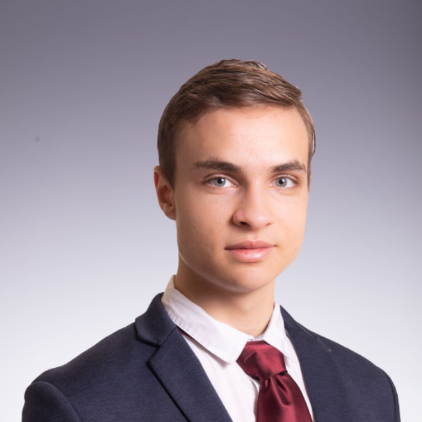
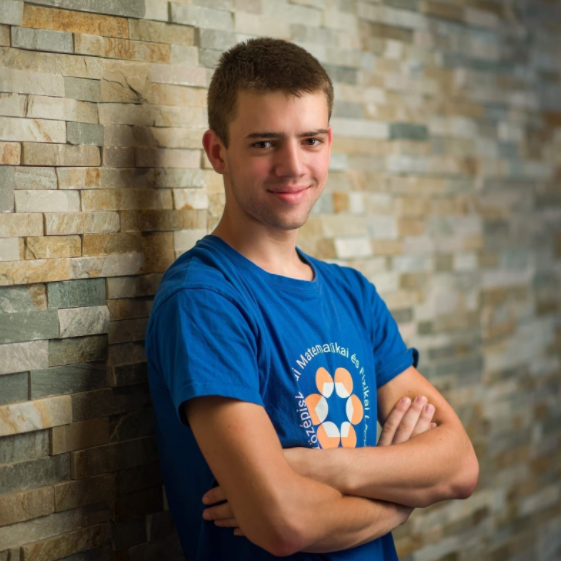
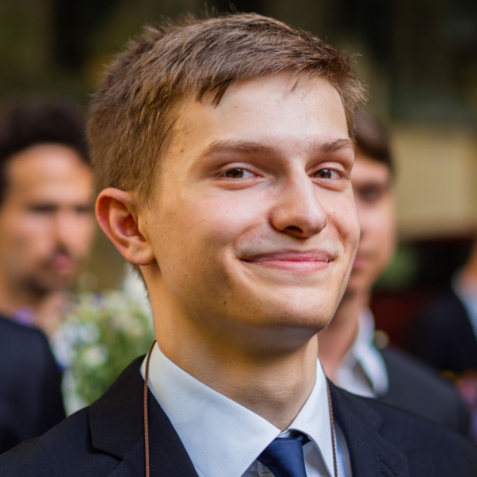
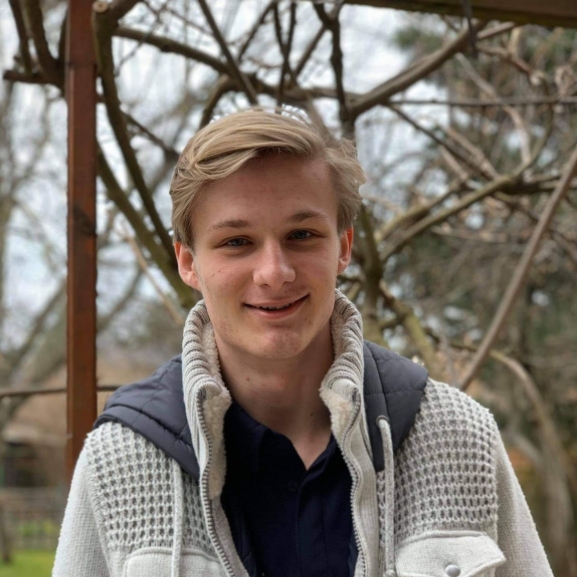
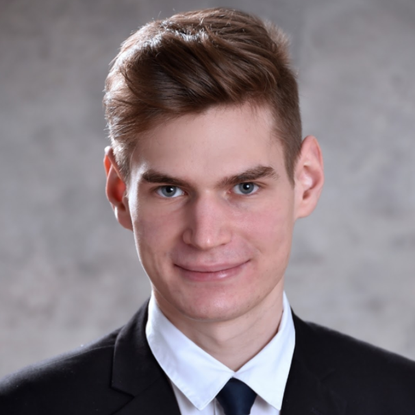

Andor Vári-Kakas
 I am Andor Vári-Kakas, a Master's student in Computer Science at ETH Zurich, where I specialize in theoretical computer science and machine learning. I did my undergraduate degree in Computer Science at Cambridge. During my high school years, I have been involved in competitive programming and mathematics competitions: I am a national champion of the Zrínyi Ilona mathematics competition, the Bolyai mathematics team competition, and the Nemes Tihamér programming competition. In addition, I won a bronze medal at the International Linguistic Olympiad in Prague. At Cambridge University, I was the 2nd best student in my second year and 7th in my third year. I've been interested in teaching for a long time, I've been preparing my friends for competitions, exams, and tests for 4 years and I joined Alphacademy two years ago. I am passionate about sports (e.g. futsal, ultimate frisbee, table tennis), and I am dedicated to the importance of sports to complement intellectual activities.
Bence Hervay
 I am a computer science student at Cambridge University, I joined Alphacademy in my final year of secondary school. I was a student at the Fazekas Mihály Gimnázium in Budapest with special mathematics curriculum, and during my 6 years there I engaged a lot with mathematics (12th in the National High School Competition), computer science (13th and 14th in the National High School Competition) and physics (1st and 7th at the National High School Competition). The combination of these three subjects has also helped me in many robotics competitions, my favourite being the 2017 FIRST Global Challenge World Robotics Building and Programming Championship, which we won and as a result the President's family invited the team to the White House. I also played acrobatic basketball for five years as a member of FaceTeam, played regular volleyball and basketball, and currently play ultimate frisbee for sports.
Bertold Kovács
 I study Computer Science and Engineering at TU Delft in the Netherlands. I started to compete in computer science during my years at the Fazekas Mihály Gimnázium in Budapest (21st in the National High School Programming Competition) and with my university team from Delft I qualified for the Benelux Algorithm Programming Contest finals in Amsterdam. I am also very interested in philosophy (5th in the National High School Competition) and won a prize in the BSPEE international essay competition. In my free time I prefer to climb walls or suffer a disastrous defeat at the hands of my friends in various board games.
Gellért Tóth
 I am Gellért Tóth, a student at Radboud University in the Netherlands, studying Artificial Intelligence. I graduated in Maths from the Árpád High School in Óbuda. I didn't achieve great success in maths, but since I was always more interested in programming, the extra time I invested in it paid off. I won silver medals at the 2021 International Olympiad in Informatics and also at the 2020 Central European Olympiad in Informatics, and I can be proud of my 4th place at the Hungarian National High School Programming Competition, although that was a bit of a disappointment for me. After the Student Olympiad, I was approached by Ágoston to teach here, but I had already had some experience of teaching. I had mentored rural students in maths and in my own school I had run an info course with a classmate with more or less success.
Kornél György Szabó
 I am Kornél Szabó, a student of Computer Science at the University of Cambridge.
My secondary school education was at the Fazekas Mihály Gimnázium in Budapest with special mathematics classes. During these years I have been involved in competitive programming and mathematics competitions, winning bronze medals in the International Olympiad in Informatics, bronze medals in the Central European Computer Olympiad in Informatics, bronze medals in the International Mathematics Olympiad and silver medals in the Central European Mathematics Olympiad.
I was also successful in the Hungarian National High School Competitions (OKTV), I finished 2nd in Programming and 10th in Mathematics. I started teaching at the Alphacademy at the end of my secondary school years, but I was also involved in talent management before that, for example when I assisted at the mathematics camps of Lajos Pósa. My hobbies include reading, rowing and rock climbing.